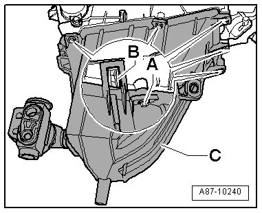

Rear Evaporator A/C Unit
Rear Evaporator A/C Unit
Removing
- Drain the refrigerant circuit --> Refrigerant R134a - Servicing.
- Remove the rear expansion valve. Refer to --> [ Rear Expansion Valve ] Removal and Replacement.
- Bring the rear A/C unit into the service position. Refer to --> [ Second Rear Heating and A/C Unit, Service Position ] Second Rear Heating and A/C Unit, Service Position.
- Remove bolts - A -.

- Release the locking mechanisms - B -.
- Remove the evaporator housing - C - with the evaporator and rear A/C unit.
Installing
Installation is carried out in the reverse order, when doing this note the following:
- Make sure the seals are seated correctly when installing.
• Use the same installation positions as the seals on the previous component.
- Fill the refrigerant circuit --> Refrigerant R134a - Servicing.
- Check the DTC memory for the Climatronic Control Module (J255) and Rear A/C Display Control Head (Climatronic) (E265). Erase any malfunctions shown --> vehicle diagnosis, testing and information system VAS 5051 in the "Guided Fault Finding" function.
- If necessary, check function of A/C system --> Vehicle Diagnosis, Testing and Information System VAS 5051 in "Guided Fault Finding" function.